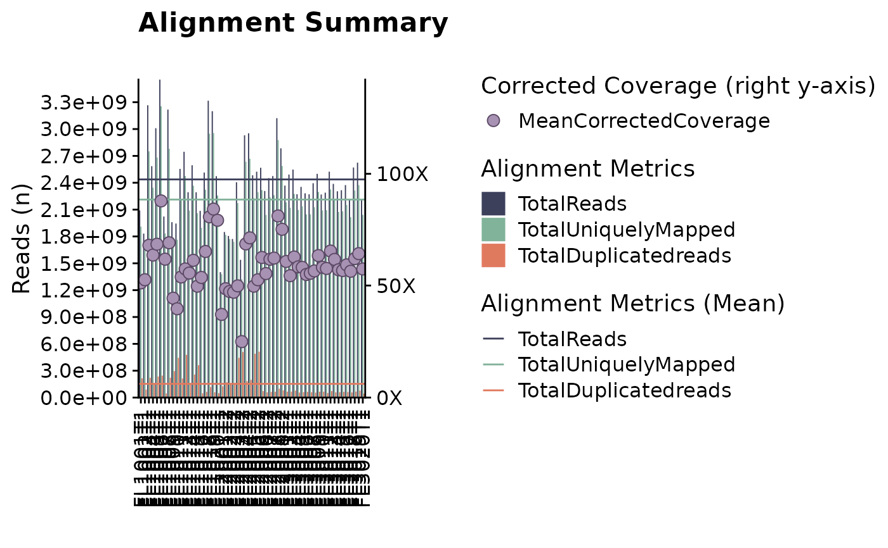
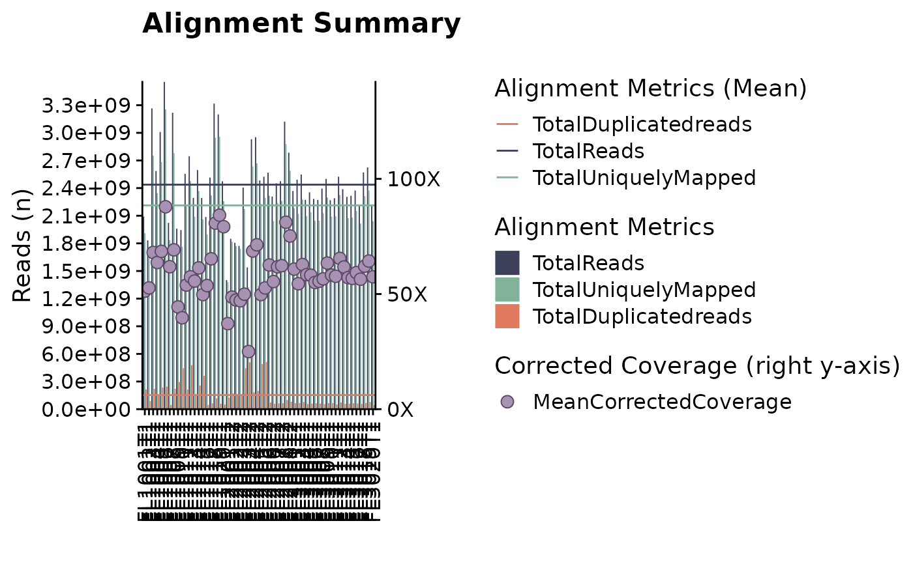

fancy_alignment_plot.RdVisualize (stacked barplot) genomic read-subsets (metrics) across a selection of samples.
fancy_alignment_plot(
these_sample_ids,
metadata,
these_samples_metadata,
comparison_group,
seq_type = "genome",
add_mean = TRUE,
add_corrected_coverage = TRUE,
keep_cohort,
keep_pathology,
this_color_palette = c(TotalReads = "#3D405B", TotalUniquelyMapped = "#81B29A",
TotalDuplicatedreads = "#E07A5F"),
plot_sub = ""
)Data frame with sample IDs (to be plotted) in the first column.
Optional argument, used to derive sample IDs if sample_table is Null.
GAMBL metadata subset to the cases you want to process.
Optional argument for plotting mean alignment metrics. Default is plotting the mean for samples provided. This parameter takes a vector of sample IDs.
Subset qc metrics to a specific seq_type, default is genome.
Set to TRUE to superimpose mean values of plotted variables. Default is TRUE.
Set to TRUE to add corrected coverage for selected samples.
If no df with sample IDs is supplied (these_sample_ids = NULL) the function calls get_gambl_metadata and subsets on selected cohorts.
If no df with sample IDs is supplied (these_sample_ids = NULL) the function calls get_gambl_metadata and subsets on selected pathology.
Optional parameter that holds the selected colours for the plotted bars.
Optional parameter, add a subtitle to the alignment metric plot.
A plot as a ggplot object (grob).
This function is available for plotting relevant alignment metrics (read-subsets) for a selection of samples. Per default, this plot returns the following read-metrics;
total n reads, total n uniquely mapped reads, total n duplicated reads. This plot can also be superimposed with read metrics from additional samples,
allowing for easy comparisons between different sample populations. To run this function, simply specify the sample IDs you are interested in with these_sample_ids.
This parameter expects a data frame with sample IDs in the first column. Optionally, the user can also provide an already subset (with the sample IDS of interest)
metadata table with these_samples_metadata. For adding a comparison group to the returned plot, simply give another cohort/set of samples to the comparison_group parameter.
Similarly to these_sample_ids, this parameter also expects a data frame with sample IDs in the first column. In addition, this plot can also add additional read-metrics such as
mean values for all plotted metrics and corrected coverage. To enable these features, simply set add_mean and add_corrected_coverage to TRUE (default).
#Example 1 - using these_sample_ids parameter
#subset on FL cases with QC metrics available and plot
metadata = get_gambl_metadata()
kridel_fl = dplyr::filter(metadata, pathology == "FL",
cohort == "FL_Kridel")
kridel_fl_samples = dplyr::select(kridel_fl, sample_id)
fancy_alignment_plot(these_sample_ids = kridel_fl_samples)
#> /projects/nhl_meta_analysis_scratch/gambl/results_local/shared/gambl_genome_results.tsv
#> QC Metric successfully retreived for 56 samples out of a total of 56 samples in input sample table.
#> Warning: The melt generic in data.table has been passed a tbl_df and will attempt to redirect to the relevant reshape2 method; please note that reshape2 is deprecated, and this redirection is now deprecated as well. To continue using melt methods from reshape2 while both libraries are attached, e.g. melt.list, you can prepend the namespace like reshape2::melt(.). In the next version, this warning will become an error.
#> Warning: The melt generic in data.table has been passed a tbl_df and will attempt to redirect to the relevant reshape2 method; please note that reshape2 is deprecated, and this redirection is now deprecated as well. To continue using melt methods from reshape2 while both libraries are attached, e.g. melt.list, you can prepend the namespace like reshape2::melt(.). In the next version, this warning will become an error.
#> Warning: Width not defined
#> ℹ Set with `position_dodge(width = ...)`

#Example 2 - using already filtered metadata (these_samples_metadata)
fancy_alignment_plot(these_samples_metadata = kridel_fl)
#> /projects/nhl_meta_analysis_scratch/gambl/results_local/shared/gambl_genome_results.tsv
#> QC Metric successfully retreived for 56 samples out of a total of 56 samples in input sample table.
#> Warning: The melt generic in data.table has been passed a tbl_df and will attempt to redirect to the relevant reshape2 method; please note that reshape2 is deprecated, and this redirection is now deprecated as well. To continue using melt methods from reshape2 while both libraries are attached, e.g. melt.list, you can prepend the namespace like reshape2::melt(.). In the next version, this warning will become an error.
#> Warning: The melt generic in data.table has been passed a tbl_df and will attempt to redirect to the relevant reshape2 method; please note that reshape2 is deprecated, and this redirection is now deprecated as well. To continue using melt methods from reshape2 while both libraries are attached, e.g. melt.list, you can prepend the namespace like reshape2::melt(.). In the next version, this warning will become an error.
#> Warning: Width not defined
#> ℹ Set with `position_dodge(width = ...)`
#Example 3 - using in-house metadata filtering options
fancy_alignment_plot(keep_cohort = "FL_Kridel",
keep_pathology = "FL")
#> /projects/nhl_meta_analysis_scratch/gambl/results_local/shared/gambl_genome_results.tsv
#> QC Metric successfully retreived for 56 samples out of a total of 56 samples in input sample table.
#> Warning: The melt generic in data.table has been passed a tbl_df and will attempt to redirect to the relevant reshape2 method; please note that reshape2 is deprecated, and this redirection is now deprecated as well. To continue using melt methods from reshape2 while both libraries are attached, e.g. melt.list, you can prepend the namespace like reshape2::melt(.). In the next version, this warning will become an error.
#> Warning: The melt generic in data.table has been passed a tbl_df and will attempt to redirect to the relevant reshape2 method; please note that reshape2 is deprecated, and this redirection is now deprecated as well. To continue using melt methods from reshape2 while both libraries are attached, e.g. melt.list, you can prepend the namespace like reshape2::melt(.). In the next version, this warning will become an error.
#> Warning: Width not defined
#> ℹ Set with `position_dodge(width = ...)`
